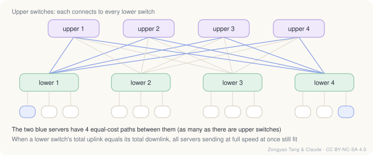
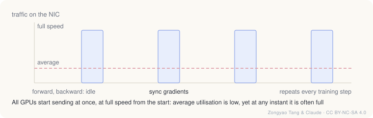
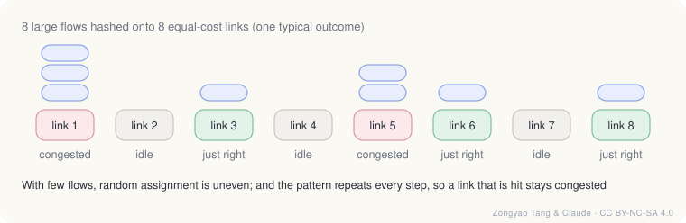

The thread: a training cluster really has two unrelated networks → the back-end one is built from many small switches into a shape that "never narrows between any two points" → the training traffic running on it has a completely different character from ordinary data-centre traffic → that character makes the traditional way of choosing routes fail → and "never dropping packets" brings a side effect: congestion spreads. This unit follows Meta's published experience, the clearest first-hand account available so far.
Part 5 · High-speed interconnects5.3 Cluster networks: topology, traffic and congestion
Translated by AI (Anthropic's Claude) from the Chinese edition. The Chinese original is the reference.
This unit answersWhat shape is the network between hundreds or thousands of GPUs? What is special about training traffic?
Follows 5.1 (inside a machine) and 5.2 (RDMA over one link): this unit widens the view to the whole cluster.
- A training cluster has two networks: the front end for data and management, the back end only for RDMA between GPUs
- The Clos topology: many small switches built into a network that never narrows between any two points
- Training traffic: very few flows, each huge, bursting together, repeating every step
- Hash-based routing meets a few large flows: several flows collide on the same link
- The price of never dropping packets: congestion travels back along the links, and one slow spot slows a whole area
Explanation
1A training cluster has two networks: the front end for data and management, the back end only for RDMA between GPUs
A training server is connected to two unrelated networks at once. The front-end network is ordinary Ethernet, used for reading data, writing checkpoints, logging in and monitoring. The back-end network connects the RDMA network cards of all servers, and carries only collective communication between GPUs.
Label the pipeline of 0.1 again by "which network the data takes":
- Step 1, reading data from storage: front end.
- Step 5, synchronising gradients across machines: back end.
- Writing checkpoints, pulling images, collecting logs and monitoring metrics: front end.
In its paper, Meta calls separating these two networks the earliest and most important decision in deploying its training network. There are three reasons:
- Different needs. The back end needs very high bandwidth, very low latency and no packet loss; the front end is a general-purpose data-centre network that needs flexibility and compatibility. Put both sets of needs on one network and neither is served well.
- Different pace of change. Each GPU generation demands more back-end bandwidth, and the back end has to be upgradable on its own, without touching the whole data centre.
- No interference. Training traffic comes in sudden large bursts (explained below); mixed in, it would disrupt other services, and other traffic would disturb training in return.
On the machine, this shows up as two sets of network cards: one or two ordinary cards for the front end, and several RDMA cards (commonly one per one or two GPUs) for the back end. NCCL's environment variables match the two networks too: which interface the ordinary TCP connection used while setting up connections goes through is controlled by
NCCL_SOCKET_IFNAME; which RDMA cards actually carry the data is controlled byNCCL_IB_HCA. On a machine with several network cards, getting either of these two wrong is a common reason initialisation hangs.An analogyLike a hospital: the outpatient hall is busy with people coming and going (the front end), while the operating area has its own separate corridors (the back end), and no other foot traffic is allowed in to disturb it.
So when troubleshooting, first work out which network the problem is on: slow data reading or slow checkpoint writing is a front-end or storage problem; slow gradient synchronisation is a back-end problem. The two networks usually differ in equipment, protocols and the people responsible.
Builds on One training step is a pipeline of stages in series; the slowest stage sets the speedGPUDirect RDMA: what is registered is not main memory but GPU memoryUsed later in The Clos topology: many small switches built into a network that never narrows between any two pointsDistributed checkpoints: each process saves its own, without making training stop and waitHow data, checkpoints and configuration get into the containerSourcesMeta RoCE paper, page 4: front-end and back-end networksMeta RoCE paper, page 5, §3.4: why the two networks are kept apart- What shape exactly is the back-end network? It has to meet a demanding condition: any two machines must be equally fast to each other.
2The Clos topology: many small switches built into a network that never narrows between any two points
No single switch has thousands of high-speed ports. The way out is two (or three) layers of small switches: each lower switch connects a group of servers, and each upper switch connects to every lower switch. As long as total uplink bandwidth is no less than total downlink bandwidth, any two servers have many equally wide paths to choose from, and the whole network behaves like one huge switch that never jams.
Structure. Take two layers as an example:
- Lower switches (often called leaves; Meta calls them rack switches): half the ports of each go down to the servers' network cards, the other half go up.
- Upper switches (often called spines): each connects to every lower switch.
When two servers on different lower switches communicate, the path is "up, then down": source server → lower switch → some upper switch → another lower switch → destination server. There are as many such paths as there are upper switches, all of the same length and the same bandwidth, hence the name equal-cost paths.

A two-layer example: 4 upper switches, 4 lower switches Never narrowing. If each lower switch's total uplink bandwidth equals its total downlink bandwidth (say 16 ports to servers and 16 ports to upper switches), then even if every server beneath it sends at full speed at once, the uplinks can carry it all. This is called 1 to 1, or non-blocking. Training back-end networks are usually built to this standard, because collective communication really does produce "every GPU sending and receiving at full speed at the same time".
Limited reach. The number of servers a two-layer Clos can connect is limited by switch port counts. To connect more machines, another layer is needed. Meta calls one two-layer Clos a "zone", which never narrows inside; zones are connected by a further layer of switches, and this layer deliberately narrows.
The effect on scheduling. So "where a job's machines are placed" starts to matter:
- All under the same lower switch: only one hop, best.
- Within the same zone: enough equal-cost paths, bandwidth guaranteed.
- Across zones: squeezing through the narrowed layer. For this reason Meta makes its job scheduler aware of the topology, and splits jobs so that cross-zone traffic is as small as possible.
This is where part 8's "topology-aware scheduling" comes from: where the scheduler places the GPUs directly decides which links the job's communication takes.
An analogyLike a city's road network: each neighbourhood (lower switch) has several exits, each leading to a different main road (upper switch). From any neighbourhood to any other there are several equally fast routes.
So the key measure of a back-end network is the "oversubscription ratio": the ratio of uplink to downlink bandwidth. Only 1 to 1 never narrows; once uplinks fall short (as often happens over larger spans), the farther apart a job's machines are placed, the less bandwidth it has.
Builds on A training cluster has two networks: the front end for data and management, the back end only for RDMA between GPUsFive ideas come back in every layerUsed later in Training traffic: very few flows, each huge, bursting together, repeating every stepForms of parallelism combined in layers by bandwidthWhere the GPUs go: line up NUMA within a node, consider network topology between nodesSourcesMeta RoCE paper, page 5: back-end topology and connections between zones- That is the shape. Now look at the traffic running on it, whose character is quite unlike an ordinary data centre's.
3Training traffic: very few flows, each huge, bursting together, repeating every step
An ordinary data centre has thousands upon thousands of flows of every size, each going its own way. A training cluster is the opposite: each network card talks to only a few peers, each flow can reach the card's full speed, and every GPU sends at the moment gradients are synchronised, then all stop together while the next step is computed.
Meta's paper sums up training traffic in three traits.
One: low entropy, few flows, always the same ones. A "flow" is a stream of packets between one pair of endpoints (told apart by source address, destination address, ports and so on). The peers in collective communication are fixed: in a ring all-reduce, each GPU talks only to its neighbours on the ring. So each network card has only a handful of flows, and every training step repeats the same pattern.
Two: bursty, on and off on a millisecond scale. Within one training step the network is almost idle during the forward pass and most of the backward pass; when synchronisation comes, every GPU starts sending at once. This "on, off" cycle is one training step, usually tens to hundreds of milliseconds.
Three: elephant flows, each burst reaching the card's full speed. There is no "speeding up gradually": it is full speed from the start.

Traffic on one network card over a few training steps Taken together, what this means for the network:
- Load balancing cannot rely on the "law of large numbers". With ten thousand small flows, even random assignment spreads them evenly; with only a dozen or so large flows, random assignment easily ends up badly uneven (next card).
- Congestion comes fast and hard. Traditional congestion control works by "probing, detecting congestion, backing off", but here traffic arrives at full speed, and the wave is over before anything has had time to adjust.
- Synchrony amplifies everything. Every GPU sending at once means the network is either entirely idle or loaded everywhere. Average utilisation looks low, yet at any instant it is often full.
This is the same point as "averages deceive" in 0.2: from five-minute average network utilisation, you cannot tell at all whether the network was the bottleneck during training.
An analogyOrdinary traffic is like a city's daytime traffic: many cars, scattered directions, coming and going. Training traffic is like a concert letting out: only a few exits, everyone surging towards them at the same moment, and a little later nobody at all.
So network mechanisms designed for ordinary traffic (balancing load through the statistical averaging of many small flows, controlling congestion by gradual probing) all have to be rethought for training clusters.
Builds on The Clos topology: many small switches built into a network that never narrows between any two pointsGPU utilisation measures "busy or not", not "busy doing something worthwhile"SourcesMeta RoCE paper, page 3: the low entropy of traffic patternsMeta RoCE paper, page 5, §4: low entropy, burstiness and elephant flows- Many equal paths, plus very few large flows. Put the two together and a problem appears.
4Hash-based routing meets a few large flows: several flows collide on the same link
How is traffic divided among equal-cost paths? Ethernet's traditional way (ECMP) computes a hash of each flow's addresses and ports and picks a path by it. With many flows the division is very even; with only a dozen or so large flows, several are quite likely to land on the same link, which is jammed while the links beside it are idle.
How ECMP chooses. A switch receiving a packet takes its five-tuple (source and destination addresses, source and destination ports, protocol) and computes a hash, and the hash decides which equal-cost path it takes. Packets of the same flow have the same hash and always take the same path, which keeps them in order. Different flows very likely land on different paths.
Why it fails here. "Very likely" needs enough flows. Assign 16 large flows at random to 16 links, and the chance of exactly one per link is tiny; some link almost certainly gets two or three while some link sits idle. The link that is hit has to carry two or three times its capacity, and the result is sustained congestion. And because the pattern of flows repeats every step, this congestion is not occasional; it is there all the time. Meta's paper calls this hash collision, and uses simulation and production data to show how serious it is.

Some links get two or three flows, some sit idle Remedy one: make more flows. Since the trouble is too few flows, split one logical connection across several QPs. Each QP has a different port number, so to the network they are different flows, hashed onto different paths. NCCL's environment variable
NCCL_IB_QPS_PER_CONNECTIONdoes exactly this; the official documentation describes it as increasing routing diversity on multi-level networks. Meta uses it together with an improved ECMP.Remedy two: route by load, not by hash. Let the switch choose a path for each packet by how crowded each path is at that moment. This is called adaptive routing. It spreads traffic more evenly, but packets of the same flow may take different paths and arrive out of order, which needs cooperation from the network card and the protocol above. InfiniBand supports adaptive routing, and on InfiniBand NCCL by default enables the transfer mode that works with it.
Remedy three: plan centrally. A controller that knows the whole network's topology and every job's traffic assigns paths to the large flows directly. Meta does this in some of its clusters.
Remedy four: let most traffic need no route choice at all. This is "rail-optimised" cabling: each server has several network cards; the first card of every server is connected to the same lower switch (or group of switches), the second to another, and so on. Each such set of cards is called a "rail". As long as both ends of a conversation use cards on the same rail, the traffic arrives in one hop at the lower switch and never goes up. NCCL's
NCCL_CROSS_NICcontrols exactly this: by default it prefers both ends to use cards with the same number, avoiding crossing rails.An analogyLike having only 16 toll booths and letting each vehicle pick a booth by the last digit of its number plate: send ten thousand cars and every booth gets about the same; send only 16 lorries and some booths are almost certain to have two or three queuing while others have none.
So a training network either increases the number of flows so that hashing spreads them apart, or stops relying on hashing and chooses paths by current load. NCCL has the matching switches; InfiniBand has adaptive routing.
Builds on Training traffic: very few flows, each huge, bursting together, repeating every stepRDMA's four things: registered memory, queue pairs, work requests, completion queuesUsed later in The price of never dropping packets: congestion travels back along the links, and one slow spot slows a whole areaSourcesMeta RoCE paper, page 5, §4.1: the trouble with ECMP, and hash collisionsMeta RoCE paper, page 6: enhanced ECMP and QP scalingDemystifying NCCL, page 5: several QPs per peerNCCL environment variables: NCCL_IB_QPS_PER_CONNECTION, NCCL_CROSS_NIC- Collisions cause congestion. In a network that does not drop packets, congestion has one more peculiar consequence.
5The price of never dropping packets: congestion travels back along the links, and one slow spot slows a whole area
A network that does not drop packets does not discard data under congestion; it makes the upstream side stop and wait (InfiniBand's credits run out, or Ethernet's PFC pauses). When the upstream buffer fills, it in turn makes its own upstream stop. So the effect of one congested point, one link running slow or one node receiving slowly spreads back layer by layer.
How back-pressure spreads. Suppose one exit of switch B is congested, and packets heading out of it queue inside B. When B's buffer is nearly full, it makes upstream switch A pause. Note the granularity of the pause: what A pauses is "this class of traffic towards B", which includes both packets for the congested exit and packets for B's other exits. The latter have a clear road ahead, yet are held back along with the rest. This is called head-of-line blocking. A's buffer then fills too, and it pauses its own upstream, and the affected area keeps growing.
This is what congestion control tries to solve. ECN plus DCQCN, from 5.2, aims to slow the sender down before buffers fill and pauses are triggered. But it is hard to tune for training traffic: the traffic arrives at full speed and does not last long. Meta's paper describes its experience: repeatedly adjusting DCQCN's parameters brought little gain, and some settings even made pauses more frequent. In the end they turned DCQCN off and relied on two things instead:
- Deep enough buffers on the switches, to absorb short bursts;
- The collective communication library's own "admission by the receiver": as 5.2 said, NCCL's receiver first sends a "clear to send", and only then does the sender send data. This amounts to flow control at the application layer: data the receiver is not ready for never enters the network at all.
This is the point of the paper most worth remembering: the communication library and the network have to be tuned together. NCCL's buffer sizes, how large a chunk it sends each time, and how many QPs it uses all directly affect how congested the network gets.
What this means for troubleshooting.
- Within one job, every step of collective communication waits for all GPUs to finish. If any segment of the ring is slow, the whole ring moves at its speed. So if one of eight GPUs has a link running slow, the result is not "one eighth slower" but everything slowing down.
- A link with a physical-layer problem (5.2's symbol errors) causes retransmissions, and while they happen the traffic behind it is back-pressured, affecting far more than the link itself.
- The fingerprints of congestion: on InfiniBand, a port's transmit-wait counter rising; on RoCE, the counts of pause frames and ECN marks rising. NCCL's documentation advises: when these counters rise as latency gets worse, check the network's congestion and lossless configuration first, rather than rushing to tune NCCL's parameters.
Troubleshooting: how to find a bad link or a slow node
Multi-machine training throughput is lower than expected, and a single machine has already been confirmed to be fine. The approach is "halve and eliminate", narrowing the problem down to one machine or one link.
Step one: first look for obvious hardware faults. On every node:
ibstat: all back-end ports are Active and LinkUp, at the same rate. If one port is a grade slower, deal with it first.perfquery -x: read twice a few minutes apart, and see whether the symbol error, link recovery and link-down counters are rising.sudo dmesg -T | grep -i -E "xid|mlx": any hardware errors from the GPUs or network cards.
Step two: compare rail by rail. If the machines are cabled by rail, test using one rail at a time (pick one network card with
NCCL_IB_HCA). If only one rail is slow, the problem is in that rail's network cards, cables, or the switch they connect to. NCCL's documentation advises the same: when faults are concentrated on one rail, look for missing links and bad ports in theibdiagnetreport.Step three: compare node by node. Measure bandwidth pair by pair:
- At the network layer:
ib_write_bw, one pair at a time. - At the NCCL layer: run all-reduce between two machines with nccl-tests (6.3).
Split the nodes into two halves and run each once; whichever half is slow, split it in half again. After a few rounds you can pin it down to one machine. If every pair is fine and it is only slow when all run together, then it is not a problem with one link but congestion or collisions that appear at scale (back to the previous card).
Step four: a health check of the whole network.
ibdiagnetwalks the whole network and lists links with high error rates, links that negotiated a low speed or width, and routing anomalies. This step is usually done by those who manage the cluster; give them the narrowed-down range from the steps above.How to spot a slow node during training. Have each process record "time per step" and "the part of it spent waiting for communication". In synchronous training every process necessarily has the same time per step, but the waiting time differs: the process that waits least is often the one everyone else is waiting for.
An analogyLike one exit on a motorway being jammed: cars queue back onto the main road, and cars not heading for that exit are stuck behind them too.
So in a training cluster, the reason "my job got slower" may not be on your own machines at all. And within one job even more so: every step of collective communication waits for all participants to finish, and the slowest link sets everyone's speed.
Builds on Hash-based routing meets a few large flows: several flows collide on the same linkRDMA assumes a network that almost never drops packets; InfiniBand achieves this with "credits"RDMA write: write straight into the other side's memory, without its CPU knowing"Slow" on the pipeline comes in only four kinds: waiting for data, on compute, for orders, for the other GPUsUsed later in A few typical faults, each with its own fingerprintThe larger the scale, the more failures are the norm: one machine is reliable, thousands multiplied together are notSourcesMeta RoCE paper, page 8, §5: attempts at congestion controlMeta RoCE paper, page 9: receiver-driven admission and buffersMeta RoCE paper, page 10: tuning the communication library and the network togetherNCCL User Guide: advice on congestion counters
Putting it together
A training cluster's back-end network carries only RDMA between GPUs, and uses a Clos topology so that between any two points there are many paths of equal width. Training traffic has few flows, each very large, all bursting at once, so when routes are chosen by hash, flows easily collide: some links are jammed while others sit empty. To avoid dropping packets the network applies back-pressure, so one point of congestion, one bad link or one slow node can slow down the whole job.
Test yourself
Without looking back at the explanation, say it in your own words.
- What does each of a training cluster's front-end and back-end networks carry? Why are they kept apart?
- What is a Clos (fat-tree) topology? What does "never narrowing" mean? How does it affect job scheduling?
- What is special about the network traffic of distributed training? How does it differ from ordinary data-centre traffic?
- How does ECMP choose a path? Why does it work poorly in training clusters? What are the remedies?
- In a network that does not drop packets, how does congestion "spread"? What does this mean for troubleshooting training performance?